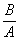

Information Research, Vol. 2 No. 4, April 1997


Information Research, Vol. 2 No. 4, April 1997 | ||||
|
|
|||
There are increasing numbers of historical texts available in machine-readable form. These texts retain the original spelling, which can be very different from the modern-day equivalents due to the natural evolution of a language, and to the fact that the concept of standardisation in spelling is a comparatively modern one. Among medieval vernacular writers, the same word could be spelled in different ways and the same author (or scribe) might even use several alternative spellings in the same passage. For example, the French text used in our experiments (described below) variously gives the name of the chief villain as Hoiaus, Hoiax, Hoiel, and Oiaus. Thus, we do not know, a priori, how many variant forms of a particular word there are in such texts, let alone what these variants might be. Searching on the modern equivalent, or even the commonest historical variant, of a particular word may thus fail to retrieve an appreciable number of occurrences unless the searcher already has an extensive knowledge of the language of the documents. Moreover, even specialist scholars may be unaware of some idiosyncratic variants. Here, we consider the use of computer methods to retrieve variant historical spellings.
Staff in the Department of French have been editing twelfth-century French narrative poems and analysing the word-variants in them. Traditionally, this has involved teams of researchers recording and classifying each word occurrence, but this has now become impractical for texts of non-trivial size. Previous work in the Department of Information Studies has investigated the searching of historical English text using algorithms developed for detecting spelling errors (Robertson & Willett, 1993). In this paper we summarise the results of applying these algorithms to medieval French literature; full details of the experiments are provided by O'Rourke (1995).
Ille et Galeron is a narrative poem telling of heroism and romance, composed by Gautier d'Arras in the late twelfth century and consisting of 6592 lines of text arranged in octosyllabic rhyming couplets. The two extant manuscripts are from the end of the thirteenth century: one (P) is in Paris and the other (W) in Nottingham. The two manuscripts preserve rather different versions of the text, and it seems possible that Gautier himself composed two versions of the poem at different times for slightly different audiences. Our work uses the P text, together with an English translation. There has been no attempt to combine the manuscripts into a consensus view, but as some lines are missing from P, a small number of lines from W have been incorporated to fill obvious gaps. Modern punctuation has been added as the original contains none.
The poem is written in Old French, and a study of the rhyme-words suggests that Gautier himself wrote in the literary form of the language which was gaining currency in his day, and which was becoming more standardised than the spoken word. However, the thirteenth-century scribe of P seems to have been of Picard origin, and introduced a considerable number of dialectal variant forms into the text that he copied.
The methods that we use for identifying word variants in historical texts are based on methods that have been developed for automatic spelling correction. Thus, in a word processing system, a mis-spelt word is searched against a dictionary of correct spellings to find the most similar, with the expectation that this will be the correct spelling. In the present context, we search a modern word against a dictionary of historical forms, with the most similar being possible variants of the query word that should be considered for inclusion in the query.
There are three main sources of spelling errors in modern texts: the input device, the text content, and the spelling skills of the author. Some 80% of errors are predictable and can be ascribed to four simple processes:
The first two are by far the commonest, though combinations and repetitions of the four are also possible (Damerau, 1964). First letters are resistant to errors, while vowels and the letters w, y, h, suffer a disproportionate number of corruptions. For instance, the vowels constitute less than a quarter of the alphabet but account for three-fifths of spelling errors. A misspelling tends to be shorter than the correct form. The longer a word is, the more variation there is in the length of its erroneous variants (Yannakoudakis & Fawthrop, 1983). The third character seems especially at risk and the likelihood of a letter being involved in an error is proportional to its frequency in the text (Pollock & Zamora, 1983).
Spelling correction may be effected by either absolute or relative methods (Pollock, 1982). The former depend on a knowledge of previous errors. It is limited because such errors are unlikely to recur in short pieces of text, and it cannot be applied to medieval documents, because these contain a number of equally valid variants, rather than one "correct" and several "wrong" forms, as occurs with modern texts. The relative method looks for "similarity" between words, and regards them as strings of characters. There are three types of similarity (Faulk, 1964):
Of these, ordinal similarity seems most appropriate for the purposes of variant identification, and all of the methods we have tested are of this type.
It should be noted that concepts of "right" and "wrong" spelling are not applicable to searching historical databases, as all variants were equally acceptable at the time of writing. A further problem is that, ideally, the historical text may need to be read as phrases rather than single words, as some of the variant old-form spellings may be modern words in their own right but with meanings that would not fit their context; however, the word-based methods considered here are not appropriate for this level of sophistication.
Methods of spelling correction that have been applied to historical text are: reverse error, phonetic and non-phonetic coding, n-grams, and dynamic programming. All of these methods, details of which are given by Robertson and Willett (1993), regard words as strings of twenty-seven characters, the twenty-six letters of the modern alphabet and a space, but cannot take account of their meanings in context. The previous work considered only English from the sixteenth to the eighteenth centuries but the methods should be text independent, so that they can be applied to a wide variety of texts, topics, historical periods and languages
We stripped out all of the words from the poem, sorted the resulting file and removed all of the duplicates to form a master dictionary. We parsed the text, sentence by sentence, splitting the screen to display the French text and English translation simultaneously in order to construct a triple dictionary of each word in the Medieval text (the old-form), its modern French equivalent (the modern-form) and an approximate modern English meaning. Together these three sets of words comprise the test collection that was used for our experiments. In selecting modern French words, we attempted to preserve the morphology of the old-form word. This meant using some words which are listed in a modern French dictionary as "archaic." Such words, though they may still be used in print and poetically, are unlikely to be heard in modern daily speech or to be first choices in end-user searching. For instance, we used affoler as the modern equivalent of afoler, but a modern French speaker would be likely to start searching on tuer, much as an English searcher would start with to kill rather than to slay. As the work is written as rhyming couplets, the endings of rhyme words may be subject to variation, and syncopated forms may be used to make the lines scan.
Some modern French equivalents could be identified from a high-quality contemporary dictionary, while more obscure words were found in Godefroy's dictionary of ninth to fifteenth century French. This provides equivalent meanings in French contemporary with its publication (1884-1902). There is unfortunately room for error in the second translation of these terms into English because the meaning of the "modern" French word may also have changed in the last century. Finding appropriate tenses and moods of irregular verbs proved especially difficult, as in many places the present tense appears to be used for completed events to increase the sense of drama and action. A hard core of unmatchable words was still outstanding at the end of the project. From the triple dictionary, a postings dictionary was prepared. This consists of pairs of words with the modern-form first, as it was used as the search term, followed by the old-form as found in the text. There is one pair for each old-form variant.
In our experiments. we focused on the methods which had yielded the best results in the work using the historical English texts (Robertson & Willett, 1993). These are n-gram matching, and longest common subsequences (LCS).
An n-gram is a string of n adjacent characters derived from a word at least n characters long. Digrams have a length of two, and trigrams have a length of three. One padding space is added at each end of the word in the case of digrams, and three in the case of trigrams. A word of n characters will have n+1 digrams, and n+2 trigrams. For example, the word TORNEROIT is processed to generate the digrams
and the trigrams
where "*" denotes a leading or trailing space. The modern-form of a query word is broken up into its constituent n-grams; the old-form of each of the words in the master dictionary is broken up in the same way, and the degree of match is the number of n-grams in common, normalised for length by the Dice coefficient. If X is the number of n-grams in the dictionary old-form, Y is the number of n-grams in the query modern form, and C is the number of n-grams in common, then the Dice coefficient is defined to be
If A and C are strings of length m and n (with both m and n being 1 and with m  n) such that C could be obtained by deleting zero or more elements from A, then C is a subsequence of A. Thus COURSE, for example, is a subsequence of COMPUTER SCIENCE. String C is a common subsequence of strings A and B if it is a subsequence of both; it is the longest common subsequence, or LCS, if it is a common subsequence, and if it is at least as long as any other common subsequence of A and B. The Dice coefficient is again used for normalisation, but this time X and Y are the lengths of the words being matched, and C is the length of the LCS.
The effectiveness of retrieval was evaluated in a manner analogous to that used for the evaluation of experimental document retrieval systems. For all of the matching methods (digrams, trigrams and LCS), we took each of the modern-forms in the postings dictionary, constructed a list of the ten or twenty words in the master dictionary which are its nearest matches, and then compared this list against the list of old-forms in the postings dictionary which are equivalent to the query modern-form (appropriate old-forms). The recall of a search is defined to be the percentage of the appropriate variants that are retrieved. If a modern-form has a set, A, of appropriate old-forms, and a set, B¸ of appropriate old-forms has been retrieved, then the recall is:
In conclusion, these experiments have demonstrated that techniques for processing English text of the sixteenth to eighteenth centuries can be applied without modification to French text of the thirteenth century, though the comparative effectiveness is rather less due to the greater age of the French text.
Damerau, F. (1964) A technique for computer detection and correction of spelling errors. Communications of the ACM, 7, 171-176.
Faulk, R.D. (1964) An inductive approach to language translation. Communications of the ACM, 7, 647-653.
O'Rourke, A.J. (1995) A Comparison of Several Algorithms in the Retrieval of Words from a Medieval French Romance. University of Sheffield, Department of Information Studies, unpublished MSc dissertation.
Pollock, J.J. (1982) Spelling error detection and correction by computer: some notes and a bibliography. Journal of Documentation, 38, 282-281.
Pollock, J.J. & Zamora, A. (1983) Collection and characterisation of spelling errors in scientific and scholarly text. Journal of the American Society for Information Science, 34, 51-58.
Robertson, A.M. & Willett, P. (1993) A comparison of spelling-correction methods for the identification of word forms in historical text databases. Literary and Linguistic Computing, 8, 143-152.
Yannakoudakis, E.J. & Fawthrop, D. (1983) The rules of spelling
errors. Information Processing and Management, 19,
87-99.
How to cite this paper:
O'Rourke, Alan J., Robertson, Alexander M., Willett, Peter, Eley, Penny, & Simons, Penny (1996) "Word variant identification in Old French" Information Research, 2(4) Available at: http://informationr.net/ir/2-4/paper22.html
© the authors, 1997, 2000. Updated: 3rd April 2000
Contents |
|
Home |